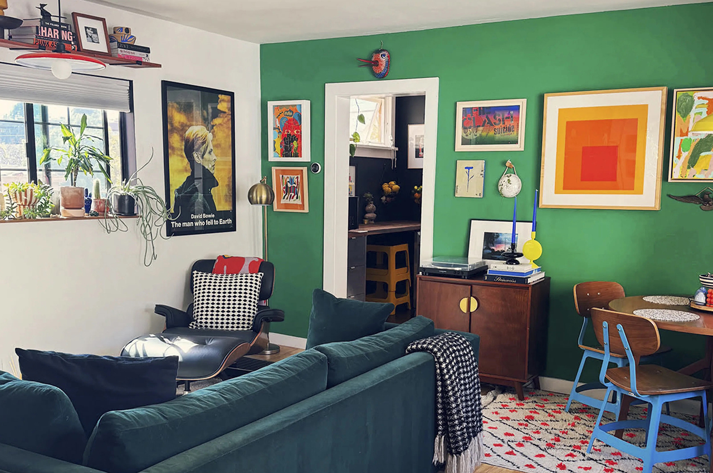
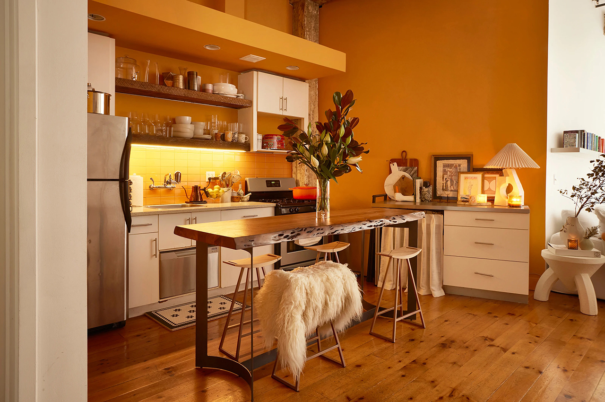
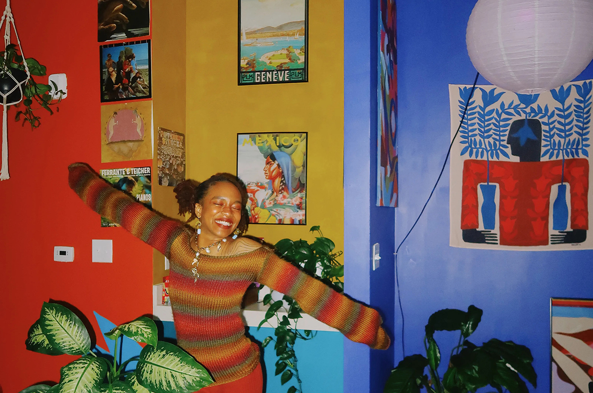

Gallery
Tours
Organize
Moving
Handpicked
Newsletter
Spaces We're Loving
Lisbon, Portugal
Lisbon, Portugal

Los Angeles, California
Bangkok, Thailand
Chicago, Illinois

Brooklyn, New York
Houston, Texas

Raleigh, North Carolina